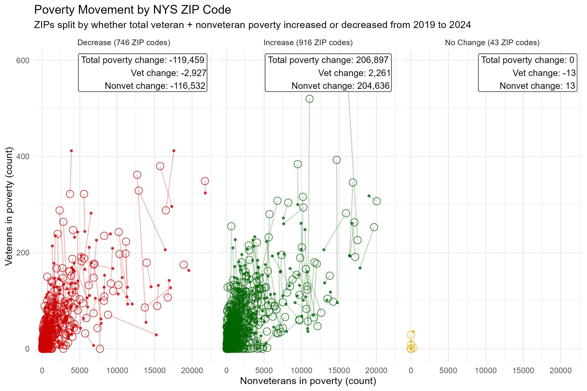

NYS Veteran Hardships by Zip Code
Overall Poverty Increased, Veteran Poverty Improved, and the Remaining Need Is Still Substantial
New York State's poverty count increased overall, but the ACS 5-year estimates suggest veterans were the one group that showed improvement. From 2019 to 2024, the total number of people below poverty increased by 4.56% (+86,210), and most of it was among nonveterans which increased by 4.74% (+87,160). In contrast, the number of veterans below poverty decreased by 1.92% (- 950). This is encouraging news—however, 48,583 veterans living below poverty is still a substantial number and highlights the continued need for targeted support.

Data: U.S. Census Bureau ACS 5-year estimates (2019 & 2024). Cleaned and summarized in RStudio. | Download: PDF
This ZIP code poverty pattern looks less like a veteran-specific shift and more like a community-wide economic tide. When ZIP codes are grouped by whether total poverty (veteran + nonveteran) increased or decreased from 2019 to 2024, veterans and nonveterans move in the same direction within each group. In the 916 ZIP codes where poverty increased, both groups increased; in the 746 ZIP codes where poverty decreased, both groups decreased. This pattern supports learning from what is working in improving communities and prioritizing targeted local economic and community wide supports in ZIP codes where poverty is increasing, because these shifts affect veterans and nonveterans simultaneously.

Data: U.S. Census Bureau ACS 5-year estimates (2019 & 2024). Cleaned and summarized in RStudio. | Download: PDF
The chart below is a ZIP code listing for New York State, showing detailed poverty counts for veterans and nonveterans in 2019 and 2024. It's intentionally granular so you can see what's happening in individual communities—not just statewide averages. Take a moment to scroll through and look up your ZIP code to see how your community compares with statewide patterns.
Data: U.S. Census Bureau ACS 5-year estimates (2019 & 2024). Cleaned and summarized in RStudio. | Download: PDF